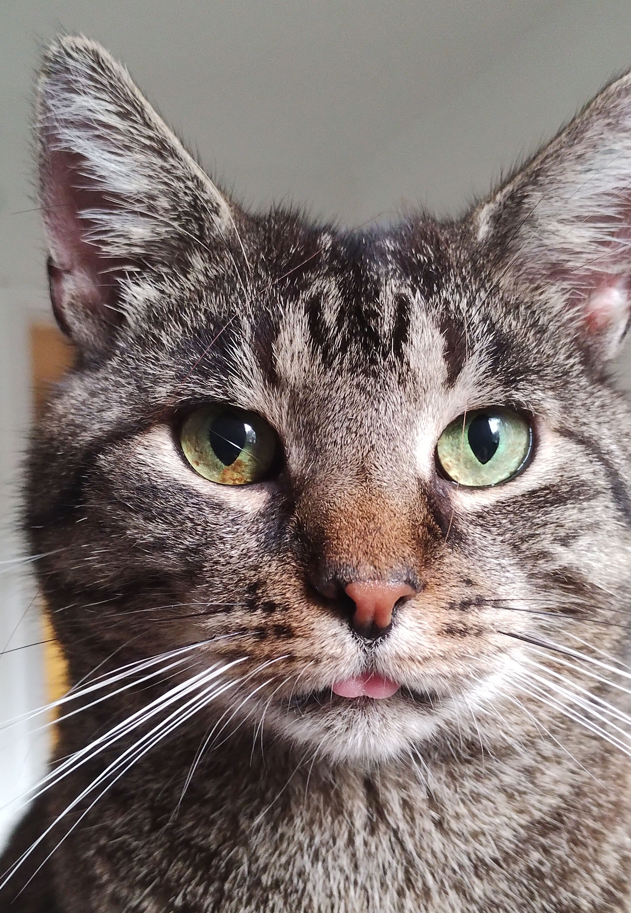

Software Engineer & Backend Specialist

I am a Software Engineer focused on building robust, scalable backend systems. Having transitioned from foundational full-stack development, I recently completed a C# Masterclass and a deep dive into the ASP.NET Core ecosystem to master enterprise-level patterns.
Professionally, I am driven by the logic and architecture of the backend. I thrive on using modern frameworks to turn complex requirements into functional reality, specializing in RESTful API design, database integrity, and server-side optimization.
My technical journey is defined by discipline and a commitment to clean code. Working through complex architectural challenges has taught me the resilience required to manage production environments and the patience to debug deep system-level issues.
I’m wired to focus deeply and notice the fine architectural details that others might miss, which I see as a critical strength in backend engineering. My goal is to secure a high-impact role that leverages my .NET expertise within a technical nomad framework.
In collaboration, I value technical autonomy and architectural respect above all. I am drawn to projects that demand high-level problem solving and offer the professional freedom to implement optimized, secure, and scalable software solutions.